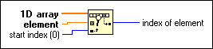

Search 1D Array Function
Owning Palette: Array VIs and Functions
Requires: Base Development System
Searches for an element in a 1D array starting at start index. Because the search is linear, you need not sort the array before calling this function. LabVIEW stops searching as soon as the element is found.
The connector pane displays the default data types for this polymorphic function.

 Add to the block diagram Add to the block diagram |
 Find on the palette Find on the palette |